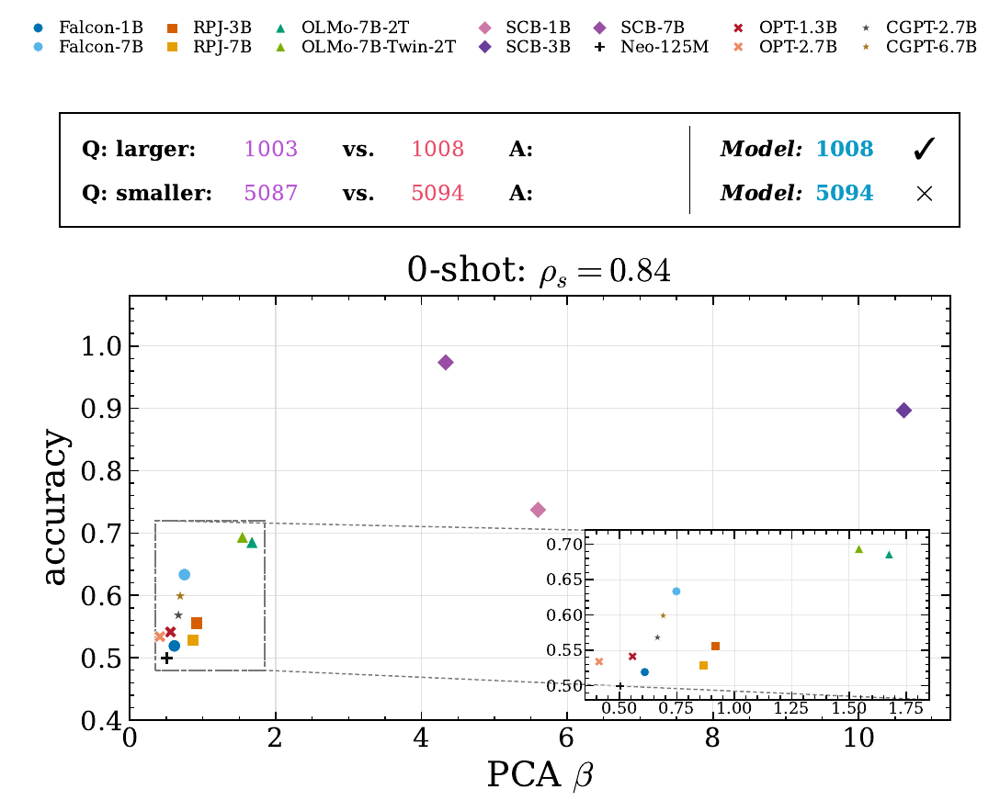
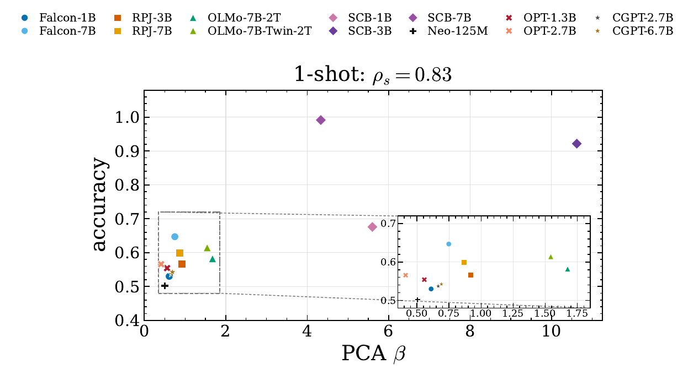
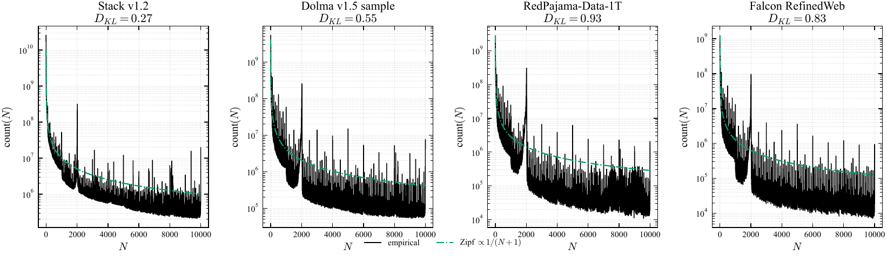
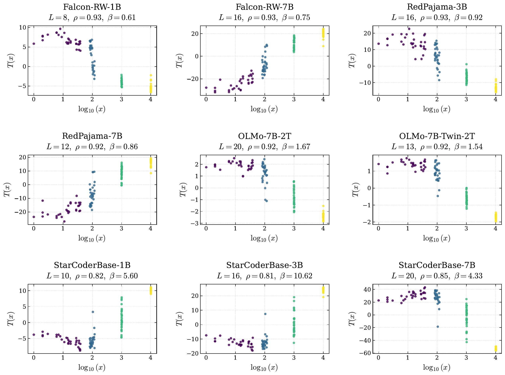
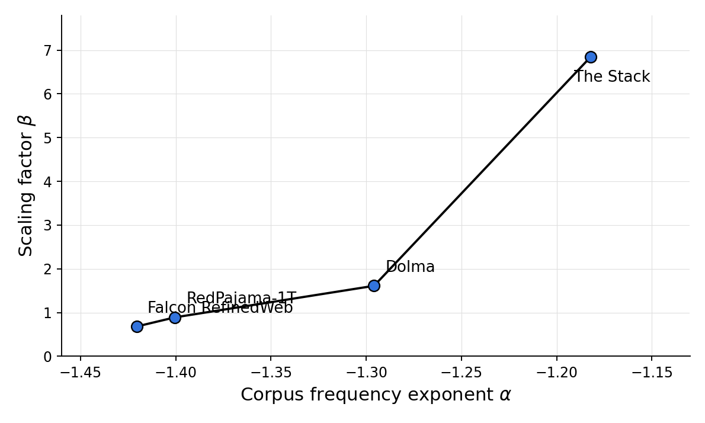

Large language models exhibit compressed, non-uniform internal representations of numerical magnitude, but the pretraining factors associated with this geometry remain unclear. We study whether corpus-level integer statistics are related to the learned number-line geometry of pretrained language models.
For four documented pretraining corpora, we count integers in [0, 10,000] and fit a magnitude-frequency power law, count(N) ∝ Nα, where more negative α indicates steeper decay and less exposure to large magnitudes. For nine corresponding base models, we extract hidden states for numerical prompts, project them onto a one-dimensional number line with PCA, and estimate a scaling factor β, where smaller β indicates stronger compression.
We first show that β is behaviorally meaningful: models with less compressed number-line geometry achieve higher likelihood-based number-comparison accuracy. We then find that flatter integer-frequency distributions, corresponding to less negative α, are associated with larger β. These results provide correlational evidence that pretraining integer statistics are reflected in the geometry of LLM number representations.
TL;DR — Our contributions:
Prior work (Alquboj et al., 2025) showed that LLMs encode numerical magnitude in a compressed, logarithmic-like geometry, quantified by the Scaling Rate Index β: β = 1 corresponds to logarithmic spacing, β < 1 to sub-logarithmic (compressed) spacing, and β > 1 to super-logarithmic (expanded) spacing, with β = 10 corresponding to a linear mapping.
Before asking what shapes β, we ask whether it matters. We construct a controlled synthetic pairwise number-comparison dataset spanning four magnitude groups (10–99, 100–999, 1,000–9,999, 10,000–99,999) and two gap regimes (small gaps d ∈ {1,…,5}, medium gaps d ∈ {6,…,10}), totaling 15,360 comparisons per model-shot condition. Instead of free-form generation, we use length-normalized likelihood scoring over the two candidate answers, so the evaluation reflects the model’s internal preference between magnitudes rather than decoding artifacts.

0-shot setting. Relationship between the compression factor β and number-comparison accuracy across models. Each point is a model. A clear positive correlation is observed (ρs = 0.84): models with less compressed numerical representations (larger β) achieve higher accuracy. The prompts above illustrate the pairwise comparison format.

1-shot setting. Accuracy on the number-comparison task vs. the PCA-based scaling factor β. The Spearman correlation ρs indicates that models with larger β tend to achieve higher comparison accuracy. The trend holds across all 0–4 shot configurations.
Performance exhibits a strong positive correlation with β in all shot settings: less compressed numerical representations correspond to better discrimination between numerical magnitudes. This shows number-line geometry is not only a representational property — it has measurable behavioral consequences — and it motivates our study of what gives rise to different β values across models.
To connect corpus statistics to representation geometry, we need models whose full pretraining data is documented and accessible. We study nine open-source base models trained exclusively on four distinct corpora, with no fine-tuning, instruction tuning, or post-training modifications.
| Dataset | Models | Description |
|---|---|---|
| Falcon-RefinedWeb | falcon-rw-1b, falcon-rw-7b | Filtered web pages from CommonCrawl |
| RedPajama-Data-1T | RedPajama-INCITE-Base-3B-v1, RedPajama-INCITE-7B-Base | Mixed text corpus with web, books, Wikipedia, and code |
| Dolma | OLMo-7B, OLMo-7B-Twin-2T | Large open corpus with web, books, papers, wiki, and code |
| The Stack | starcoderbase-1b, starcoderbase-3b, starcoderbase-7b | Programming code dataset from public repositories |
For each corpus, we perform a full pass over the text and count occurrences of every integer 0 ≤ N ≤ 10,000, normalizing digit strings to numeric values (e.g., “001” counts as 1). We then model each empirical distribution as a magnitude-based power law, count(N) ∝ Nα, estimated by a linear fit in log–log space. Unlike the classical Zipf rank-frequency law, N here is the integer’s value, not its frequency rank — so α directly captures how rapidly number frequency decays as numerical magnitude grows.

Empirical integer-frequency distributions for the pretraining datasets. DKL measures how far each dataset deviates from the baseline. Small integers dominate every corpus, with visible spikes at round numbers and years.
| Dataset | Count (billions) | Magnitude Fit | ||||
|---|---|---|---|---|---|---|
| [0, 10) | [10, 10²) | [10², 10³) | [10³, 10⁴] | α | R² | |
| Stack v1.2 | 51.530 | 23.656 | 13.420 | 10.050 | −1.18 | 0.91 |
| Dolma v1.5 sample | 18.879 | 11.297 | 4.701 | 5.725 | −1.30 | 0.81 |
| RedPajama-Data-1T | 9.849 | 8.402 | 3.059 | 6.741 | −1.40 | 0.68 |
| Falcon RefinedWeb | 4.633 | 4.017 | 1.426 | 2.222 | −1.42 | 0.79 |
Integer-frequency mass across magnitude bins for each pretraining dataset, with the fitted magnitude-frequency exponent α from count(N) ∝ Nα and the corresponding log–log fit R². Smaller (more negative) α indicates a steeper decay in exposure as numerical magnitude increases.
For each model, we extract hidden representations of numerical inputs at every layer, project them to one dimension with PCA, and measure two quantities: the Spearman monotonicity score ρ (does the projection preserve numerical order?) and the scaling factor β (how does spacing evolve across orders of magnitude, fit via yi+1 − yi = Aβi on inputs xi = 10i). We report the layer with the highest explained variance.

1-D PCA projections of internal number representations T(x) against log10(x), with the monotonicity score ρ and scaling factor β reported for each model. PCA often produces a clear monotonic ordering of numerical values, forming a measurable internal number line.
| Model | Dataset | Layer | ρ | β | σ² |
|---|---|---|---|---|---|
| Falcon-RW-1B | RefinedWeb | 8 | 0.93 ± 0.01 | 0.61 ± 0.01 | 0.31 ± 0.00 |
| Falcon-RW-7B | 16 | 0.93 ± 0.01 | 0.75 ± 0.03 | 0.33 ± 0.01 | |
| INCITE-3B | RedPajama | 16 | 0.93 ± 0.01 | 0.92 ± 0.06 | 0.39 ± 0.01 |
| INCITE-7B | 12 | 0.92 ± 0.01 | 0.86 ± 0.07 | 0.37 ± 0.01 | |
| OLMo-7B-2T | Dolma | 20 | 0.92 ± 0.01 | 1.67 ± 0.23 | 0.49 ± 0.02 |
| OLMo-7B-Twin-2T | 13 | 0.92 ± 0.00 | 1.54 ± 0.12 | 0.50 ± 0.01 | |
| StarCoderBase-1B | Stack | 10 | 0.82 ± 0.01 | 5.60 ± 2.86 | 0.37 ± 0.01 |
| StarCoderBase-3B | 16 | 0.81 ± 0.01 | 10.62 ± 6.07 | 0.37 ± 0.01 | |
| StarCoderBase-7B | 20 | 0.85 ± 0.01 | 4.33 ± 1.10 | 0.37 ± 0.00 |
PCA-based analysis of numerical representations across models: selected layer, monotonicity score ρ, compression factor β, and explained variance σ². Falcon and RedPajama models exhibit strong number-line structure with ρ ≈ 0.92–0.93 but small β (strong compression); OLMo models show intermediate β; StarCoderBase models exhibit the largest β, corresponding to substantially expanded spacing at higher magnitudes.
Putting the two sides together, we compare each corpus’s frequency exponent α against the scaling factors β of the models trained on it. According to our hypothesis, steeper decay (more negative α) reduces exposure to large numbers during pretraining, leading to stronger compression (smaller β); flatter distributions provide more exposure to large numbers, resulting in weaker compression (larger β).

Relationship between the signed corpus frequency exponent α and the PCA-based numerical scaling factor β. Each point aggregates the matched model family for one pretraining corpus. The matched corpus–model pairs show a monotonic trend: less negative α corresponds to larger β.
The empirical picture is consistent: The Stack has the flattest integer-frequency decay (α = −1.18) and its StarCoderBase models exhibit the largest scaling factors (mean β = 6.85). Dolma shows intermediate decay (α = −1.30) and its OLMo models have intermediate β (1.67, 1.54). RedPajama (α = −1.40) and Falcon RefinedWeb (α = −1.42) have steeper frequency decay, and their models exhibit the smallest scaling factors. This supports the hypothesis that flatter numerical frequency distributions in pretraining data are associated with more expanded number-line representations, while steeper frequency decay is associated with stronger compression.
We studied how LLM number-line geometry relates to integer-frequency structure in pretraining data. Across multiple model families, numerical representations align along a dominant PCA direction, forming a measurable internal number line whose spacing varies systematically: models trained on corpora with flatter integer-frequency decay exhibit larger scaling factors β, while corpora with steeper decay yield more compressed representations. These results suggest that number representations are shaped by corpus-level statistics, not only scale — and the number-comparison probe shows that this geometry has measurable behavioral consequences.
Our analysis is limited by access to exact pretraining data. Many models are trained on only partially documented mixtures, so dataset counts are approximate; Falcon RefinedWeb, for example, is only a proxy for Falcon’s full training distribution. We also focus on digit-based prompts and PCA projections of hidden states, which do not cover all numerical reasoning phenomena, such as dates, units, or written number forms. Future work should test broader numerical formats and tasks.
@inproceedings{elshehaby2026numberline,
author = {Elshehaby, Ahmed and Awad, Mohammed},
title = {Pretraining Numerical Frequency and Number-Line in Language Models},
booktitle = {ICML 2026 Workshop on Mechanistic Interpretability},
year = {2026},
}